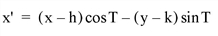
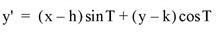
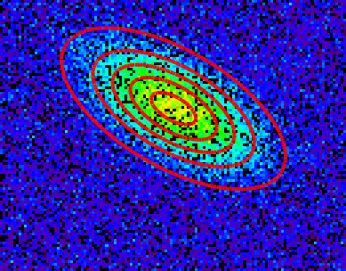

The GAUSS2DFIT function fits a two-dimensional, elliptical Gaussian equation to rectilinearly gridded data. Given a set of gridded data, Z = F(x, y),
where:
And the elliptical function is:
The rotated coordinate system is defined as:


The parameters of the ellipse U are:
| • | Axis lengths are 2a and 2b, in the unrotated X and Y axes, respectively. |
| • | Center is at (h, k). |
| • | Rotation of T radians from the X axis, in the clockwise direction. |
The rotation is optional, and can be forced to 0, making the major and minor axes of the ellipse parallel to the X and Y axes.
The peak/valley is found by first smoothing Z and then finding the maximum or minimum, respectively. GAUSSFIT is then applied to the row and column running through the peak/valley to estimate the parameters of the Gaussian in X and Y. Finally, CURVEFIT is used to fit the 2D Gaussian to the data.
Be sure that the 2D array to be fit contains the entire peak/valley out to at least 5 to 8 half-widths, or the curve-fitter may not converge.
This is a computationally-intensive routine. The time required is roughly proportional to the number of elements in Z.
This routine is written in the IDL language. Its source code can be found in the file gauss2dfit.pro in the lib subdirectory of the IDL distribution.
Result = GAUSS2DFIT( Z, A [, X, Y] [, FITA=vector] [, MASK=array] [, /NEGATIVE] [, /TILT] )
The dependent variable. Z should be a two-dimensional array with dimensions (Nx, Ny). Gridding in the array must be rectilinear.
A named variable in which the coefficients of the fit are returned. A is returned as a seven element vector the coefficients of the fitted function. The meanings of the seven elements in relation to the discussion above is:
| • | A[0] = A0 = constant term |
| • | A[1] = A1 = scale factor |
| • | A[2] = a = width of Gaussian in the X direction |
| • | A[3] = b = width of Gaussian in the Y direction |
| • | A[4] = h = center X location |
| • | A[5] = k = center Y location. |
| • | A[6] = T = Theta, the rotation of the ellipse from the X axis in radians, counter-clockwise. |
An optional vector with Nx elements that contains the X values of Z (i.e., Xi is the X value for Zi,j. If this argument is omitted, a regular grid in X is assumed, and the X location of Zi,j = i.
An optional vector with Ny elements that contains the Y values of Z (i.e., Yj is the Y value for Zi,j. If this argument is omitted, a regular grid in Y is assumed, and the Y location of Zi,j = j.
Set this keyword to a vector with the same number of elements as A. The vector should contain a zero for each fixed parameter and non-zero values for the elements of A to fit. If you do not specify FITA, then all parameters are assumed to be non-fixed.
Set this keyword to a 2D array with Nx x Ny dimensions, containing a 1 for each good data point, and a 0 for each missing data point. By default all data points are included in the fit.
Set this keyword to indicate that the Gaussian to be fitted is a valley (such as an absorption line). By default, a peak is fit.
Set this keyword to allow the orientation of the major and minor axes of the ellipse to be unrestricted. The default is that the axes of the ellipse must be parallel to the X and Y axes. Therefore, in the default case, A[6] is always returned as 0.
This example creates a 2D gaussian, adds random noise, adds some bad data points, and then applies GAUSS2DFIT.

; Create X and Y arrays:
nx = 128L
ny = 100L
X = FINDGEN(nx) # REPLICATE(1.0, ny)
Y = REPLICATE(1.0, nx) # FINDGEN(ny)
; Define input function parameters:
aAxis = nx/6.
bAxis = ny/10.
h = 0.5*nx
k = 0.6*ny
tilt = 30*!PI/180
A = [ 5., 10., aAxis, bAxis, h, k, tilt]
; Create an ellipse:
xprime = (X - h)*cos(tilt) - (Y - k)*sin(tilt)
yprime = (X - h)*sin(tilt) + (Y - k)*cos(tilt)
U = (xprime/aAxis)^2 + (yprime/bAxis)^2
; Create gaussian Z with random noise:
Zideal = A[0] + A[1] * EXP(-U/2)
Z = Zideal + RANDOMN(seed, nx, ny)
B = [] ; clear out the variable
; Make about 20% of the points be "bad" data.
bad = WHERE(RANDOMU(1, nx, ny) gt 0.8)
Z[bad] = 999
; Create the mask of the bad data points.
mask = REPLICATE(1, nx, ny)
mask[bad] = 0
;***** Fit the function *****
yfit = GAUSS2DFIT(Z, B, /TILT, MASK=mask)
; Report results:
PRINT, 'Should be: ', STRING(A, FORMAT='(6f10.4)')
PRINT, 'Is: ', STRING(B, FORMAT='(6f10.4)')
; Create an array with our fitted results
xprime = (X - B[4])*cos(B[6]) - (Y - B[5])*sin(B[6])
yprime = (X - B[4])*sin(B[6]) + (Y - B[5])*cos(B[6])
Ufit = (xprime/B[2])^2 + (yprime/B[3])^2
Zfit = B[0] + B[1] * EXP(-Ufit/2)
; Plot the results. The black dots are missing data.
im = IMAGE(BYTSCL(Z, MAX=20), RGB_TABLE=40, LAYOUT=[1,1,1])
; Contour plot of the fit.
c = CONTOUR(Zfit, /OVERPLOT, C_THICK=[4], COLOR='red')
|
4.0.1 |
Introduced |
|
8.0 |
Added FITA and MASK keywords |
COMFIT , GAUSSFIT , POLY_FIT , REGRESS , SFIT , SVDFIT , “Curve and Surface Fitting” (Chapter 7, Using IDL) in the help/pdf directory of the IDL installation directory.